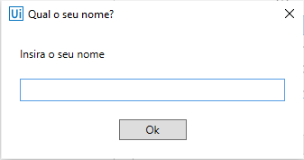
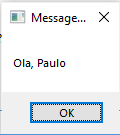

Exercício I¶
Exercício I¶
Criar uma tela que exibe o nome digitado¶
Neste exemplo criaremos uma sequência que captura o nome do usuário a partir de um Diálogo de Entrada - Input Dialog e exibe uma mensagem “Olá, [nome da entrada]” com o nome da entrada dada em uma Caixa de Mensagem - Message Box.
II - Escolha o nome da nova sequência¶
Escolha o nome da nova sequência no diálogo que aparecerá.
IV – Insira Input Dialog na sequência¶
Arraste o Input Dialog para a sequência, contido em System -> Dialog -> Input Dialog.
V – Preencha o Input Dialog¶
Preencha o título da janela (“Title”) e o texto a ser exibido acima da caixa de entrada (“Label”)
OBS: Todo texto que não seja nome de variável ou expressão deve estar contido entre aspas.
VI – Crie uma nova variável para guardar o valor da entrada¶
Crie uma nova variável para guardar o valor da entrada do Input Dialog - no nosso caso a variável chama-se “name”.
VII – Configure a saída do Input Dialog¶
Ainda com o Input Dialog selecionado, clique na aba Properties e defina o valor “Result” com o nome da variável que você selecionou - no nosso caso “name”.
VII – Insira Message Box na sequência¶
Arraste a Message Box para a sequência, contida em System -> Dialog -> Message Box.
VIII – Inserir Texto na Message Box¶
Insira o texto a ser exibido (no nosso caso “Ola, “) concatenado com o nome da variável (+ name).
IX – Execute a sequência¶
Aperte F6 para rodar o programa ou clique no botão Debug File dentro do Ribbon.
X – Programa sendo Executado¶
O programa irá rodar e aparecerá uma caixa de diálogo pedindo para você inserir seu nome.

XI – Diálogo Final¶
Logo em seguida aparecerá uma caixa contendo o diálogo com o nome que você inseriu anteriormente.
